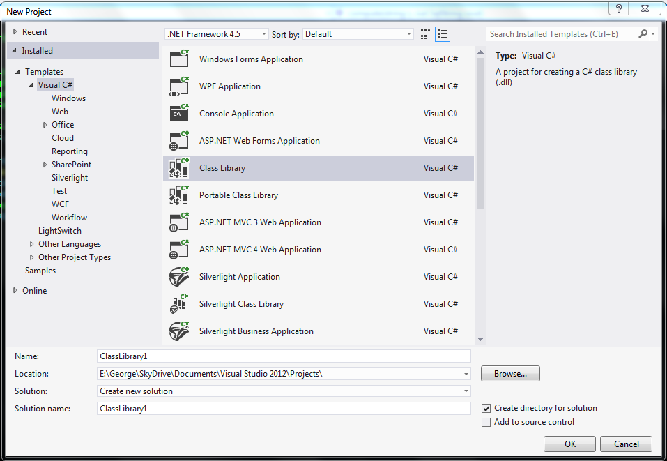

SQLCLR is a technology for hosting of the .NET CLR engine inside SQL Server. Adding an assembly can be a lifesaver sometimes, since the limitations of coding in TSQL stored procedures, triggers or functions are a lot and profound.
As a quick guide, follow these steps:
1. Create a new class library using Studio

2. Add the following code
using System;
using System.Data;
using Microsoft.SqlServer.Server;
using System.Data.SqlTypes;
namespace ClassLibrary1 {
public class Class1 {
[Microsoft.SqlServer.Server.SqlProcedure]
public static void Method1( string sIn, out SqlString sOut ) {
sOut = DoSomethingAndReturn( sIn );
}
[Microsoft.SqlServer.Server.SqlProcedure]
public static void Method2( string sIn ) {
SqlContext.Pipe.Send( DoSomethingAndReturn( sIn ); );
}
}
}3. After building the assembly, place the dll somewhere that SQL Server can read it and try the following:
--Change the owner of the current database (must be sa and so do you!)
EXEC dbo.sp_changedbowner @loginame = N'sa', @map = false
GO
--CLR Integration Security (http://technet.microsoft.com/en-us/library/ms131071.aspx)
ALTER DATABASE YOUR_DB SET TRUSTWORTHY ON;
--Add the Messaging assembly (comment out these lines if Messaging assenbly is already installed)
CREATE ASSEMBLY Messaging
AUTHORIZATION dbo
FROM 'C:\PATH_TO_FRAMEWORK\System.Messaging.dll'--e.g. C:\Windows\Microsoft.NET\Framework\v4.0.30319\System.Messaging.dll
WITH PERMISSION_SET = UNSAFE
GO
--Create your assembly
CREATE ASSEMBLY assembly_testCLR
AUTHORIZATION dbo
FROM 'C:\YOUR_PATH\ClassLibrary1.dll'--Your path to the assembly
WITH PERMISSION_SET = UNSAFE
GO
--Create a stored procedure to call it
CREATE PROCEDURE sp_testCLR
@inS nvarchar(200),
@outS nvarchar(MAX)OUTPUT
AS EXTERNAL NAME assembly_testCLR.[TestCLR.TestCLRClass].[Pointless]
GO
--Test it
DECLARE @msg varchar(MAX)
EXEC sp_testCLR 'Just a string without a dot', @msg output
PRINT @msg